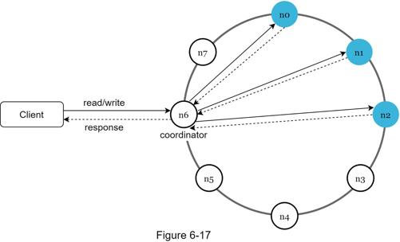
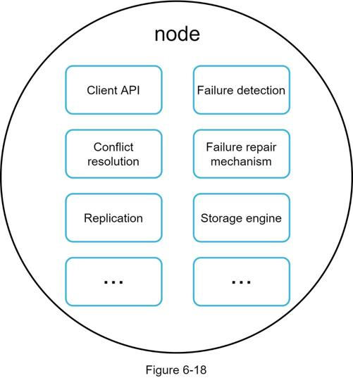
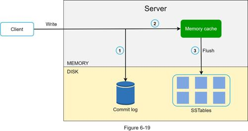
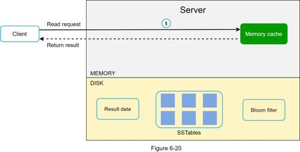
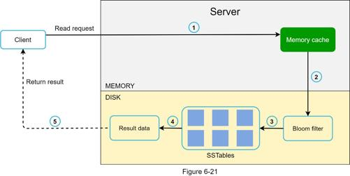

Now that we have discussed different technical considerations in designing a key-value store, we can shift our focus on the architecture diagram, shown in Figure 6-17.

Main features of the architecture are listed as follows:
•Clients communicate with the key-value store through simple APIs: get(key) and put(key, value).
•A coordinator is a node that acts as a proxy between the client and the key-value store.
•Nodes are distributed on a ring using consistent hashing.
•The system is completely decentralized so adding and moving nodes can be automatic.
•Data is replicated at multiple nodes.
•There is no single point of failure as every node has the same set of responsibilities.
As the design is decentralized, each node performs many tasks as presented in Figure 6-18.

Figure 6-19 explains what happens after a write request is directed to a specific node. Please note the proposed designs for write/read paths are primary based on the architecture of Cassandra [8].

1. The write request is persisted on a commit log file.
2. Data is saved in the memory cache.
3. When the memory cache is full or reaches a predefined threshold, data is flushed to SSTable [9] on disk. Note: A sorted-string table (SSTable) is a sorted list of <key, value> pairs. For readers interested in learning more about SStable, refer to the reference material [9].
After a read request is directed to a specific node, it first checks if data is in the memory cache. If so, the data is returned to the client as shown in Figure 6-20.

If the data is not in memory, it will be retrieved from the disk instead. We need an efficient way to find out which SSTable contains the key. Bloom filter [10] is commonly used to solve this problem.
The read path is shown in Figure 6-21 when data is not in memory.

1. The system first checks if data is in memory. If not, go to step 2.
2. If data is not in memory, the system checks the bloom filter.
3. The bloom filter is used to figure out which SSTables might contain the key.
4. SSTables return the result of the data set.
5. The result of the data set is returned to the client.